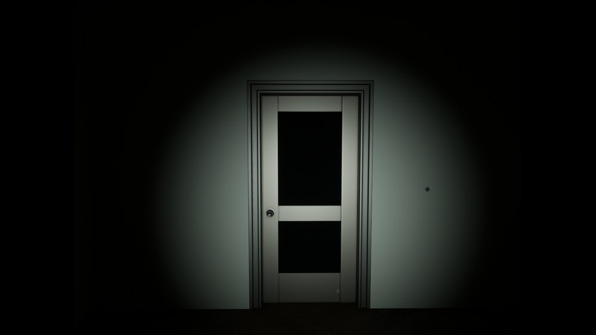
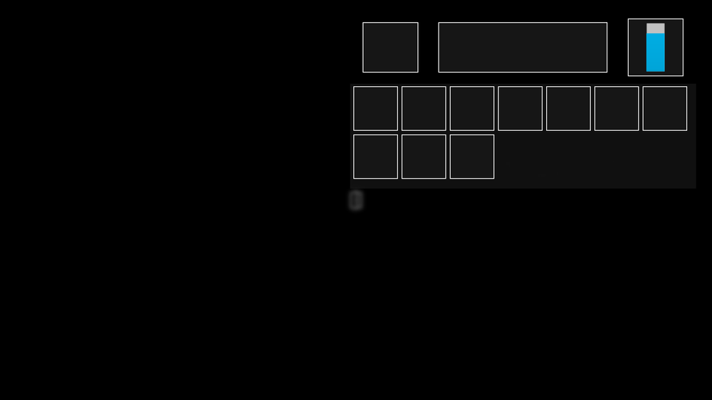

Horror · My First Unreal Engine 5 Project
You wake up in an old sanitarium with nothing but a flashlight and a backpack, and you have to find your way out. Named after and inspired by the real Penhas da Saúde sanatorium in Serra da Estrela, Portugal.


My first project in Unreal Engine 5, built as a first-person horror prototype: you wake up alone in an abandoned sanitarium with just a flashlight and a backpack, and have to explore, manage a limited inventory, and find a way out. Movement runs on WASD with a toggleable flashlight, item interaction, and an inventory screen, all built around keeping the player's resources deliberately scarce.